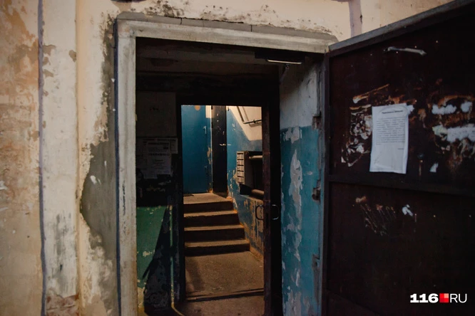
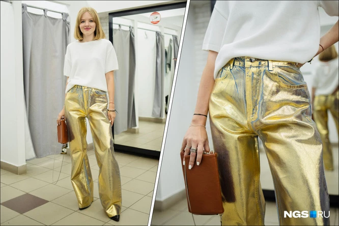

«Заявляет, что я спер чебурек»: охранник «Ашана» обвинил мужчину в краже — почему так получилось
Автор: Иванов | Дата: 28.08.2023
По словам мужчины, штрих-код с товаром нужно было пробить дважды, о чем он не знал
«Мы честные нормальные менты»: история пенсионеров МВД, которых выкинули на улицу как «отработанный материал»
Автор: Иванов | Дата: 27.08.2023

В Казани 13 семей с детьми выставили за дверь, не предложив вообще никакой помощи
Октябрьский или Коммунальный? Главному мосту исполнилось 68 лет — вспоминаем его историю
Автор: Иванов | Дата: 26.08.2023
Его название официально закрепили только несколько лет назад
Безопасность есть, рисков меньше: смогут ли «умные» часы заменить первокласснику телефон
Автор: Иванов | Дата: 25.08.2023
Ряд преимуществ делает часы не только удобнее, но и функциональнее
Золотая лихорадка: в Новосибирске продают необычные джинсы — с чем их носить и как следят за трендами местные бренды
Автор: Иванов | Дата: 24.08.2023

Можно ли найти трендовые вещи у старых сибирских брендов — мы прошлись по магазинам со стилистом